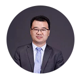

巫景飞
私募云通董事长、联合创始人，复旦大学管理学博士上海大学经济学院副教授，硕士生导师
长期从事产业分析与企业战略研究，具有二十年以上管理咨询经验。曾经为包括意大利Ferretti游艇集团、意大利Savio纺机公司、中国商用飞机有限公司、浙江国贸集团、浙江物产集团、浙江东方股份有限公司、汇鸿国际股份有限公司、舟山港集团、杭州联合商业银行、江苏高科技投资集团、舟山市国资委、上海市国资委以及中组部等机构提供过咨询或培训服务。
已在《管理世界》、《中国工业经济》、《财贸经济》、《企业管理》、《中国商业评论》、《上海国资》等多个刊物上发表数十篇经济理论与实务文章，先后主持或参与了国家重点基础研究发展计划（973项目）、国家科技支撑计划、国家社科基金、国家发改委CDM基金、国务院法制办立法研究等多项国家级、省部级研究项目。
2014年，与浙江省浙商资产管理有限公司共同创建“浙商资产管理研究院”，并担任院长一职。
2016年4月创立私募云通，任董事长；同年11月出任上海长江时代众创空间数字技术有限公司CEO，金电长时征信公司董事长。
2016年4月创立私募云通，任董事长；同年11月出任上海长江时代众创空间数字技术有限公司CEO，金电长时征信公司董事长。

李勇
首席金融顾问，香港中文大学统计学哲学博士学位，中国人民大学汉青经济金融研究院金融系教授、博士生导师、金融专业硕士项目主任、院长助理
盘古智库学术委员，教育部青年长江学者，新加坡管理大学金融学博士后，中国人民大学量化投资研究所所长。
长期以来从事金融计量经济学、量化投资、资产配置方面的研究，在中英文顶级期刊如Journal of Econometrics、Quantitative Finance、Journal of Future market、《经济研究》、《管理世界》等学术杂志共发表文章35篇，其中SSCI/SCI收录23篇，出版学术专著一部，编著一部。
近年来，李教授致力于资产配置特别是FOF和智能投顾的研究，开发了多个FOF和智能投顾的资产配 置模型，致力于搭建FOF和智能投顾模型的量化投资体系，在中央电视台等媒体多次讲授FOF，是多家FOF管理公司的咨询顾问，同时也是证监会、北京市金融局等单位的项目评审专家，也是国家京津冀一体化金融规划的项目参与专家。
倪中新
首席数据科学家，上海大学金融学教授、博士生导师，金融信息研究中心主任
主要研究领域：数理统计、金融计量经济、金融风险管理、数量投资分析。曾任教于华东理工大学理学院数学系，先后担任助教、讲师、副教授。期间兼任数学模型竞赛教练，多次指导学生参加国际、国内数学模型竞赛，并荣获国际特等奖一项、国际及国内一等奖多项，具有丰富的数学建模经验。
2013-2014年作为高级研究学者赴美国纽约州立大学石溪分校访学交流。主持及参与完成国家自然科学基金项目、上海市教委科研创新重点项目等多项课题。入选上海市“浦江人才”计划。
近年来在SSCI、SCI检索的国际期刊以及国内重要学术期刊公开发表学术论文30多篇。曾荣获宝钢教育基金优秀教师奖、中国核工业集团公司科学技术奖二等奖、中国数量经济学会优秀论文一等奖等。兼任上海数量经济学会常务理事、中国现场统计学会资源与环境分会理事，European Journal of Operational Research、Quantitative Finance、Computational Economics、Communications in Statistics、《应用概率统计》、《国际贸易问题》等国际及国内重要期刊的审稿人。
冯美云
总经理、联合创始人
大连海事大学信息管理专业毕业，长期从事宏观数据、行业数据和和微观数据搭建数据分析框架，利用数据分析手段进行研究、评估和预测，以此支持行业资源优化配置和企业业务策略制定。从业多年，客户分布国内外银行、证券公司、交易所等大型企业机构。
曾就职于证券公司、外资投资咨询公司和研究院，擅长国际宏观经济数据分析，曾主导宏观与金融数据库项目的筹建与上线。擅长数据领域：全球宏观经济、不良资产管理行业、国内私募证券投资基金评价。
项目经验：《CV—全球宏观数据库》、《中宏—全球宏观经济数据》、《浙商资产房地产数据库》、《浙商资产管理研究院不良资产数据库》等。